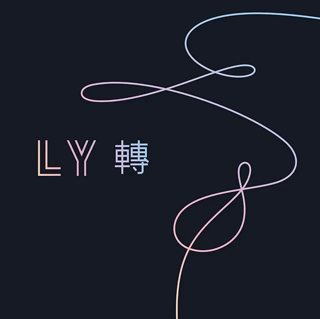
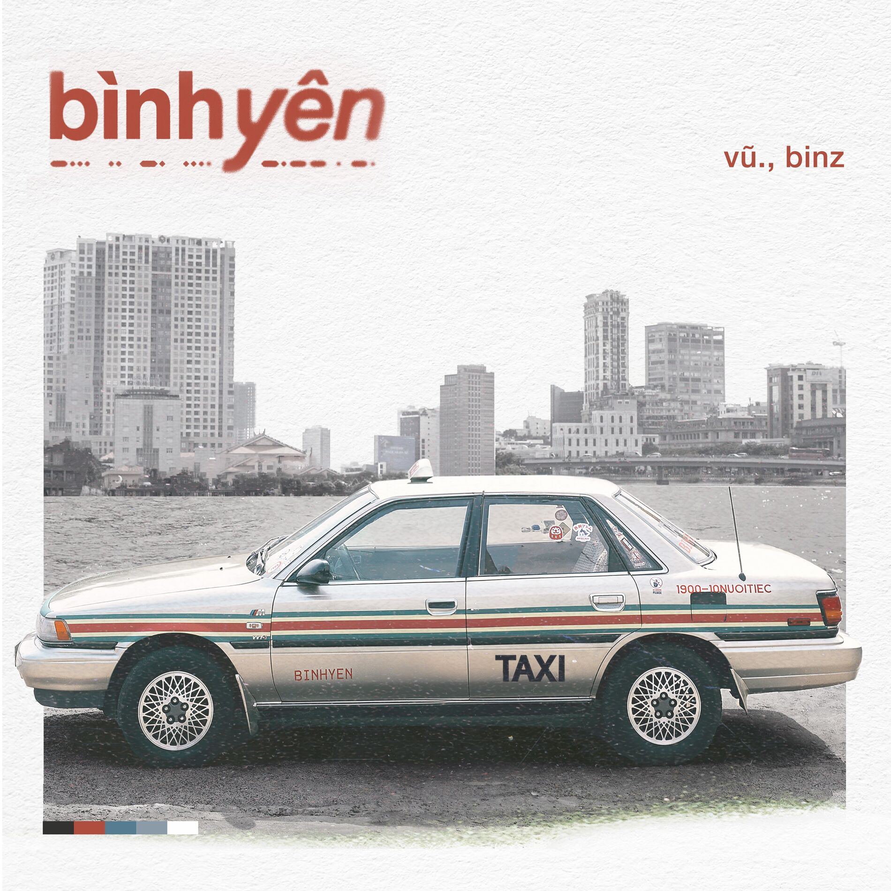
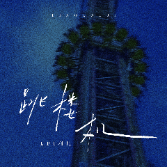

What songs I listening to?
Here are some of the songs I've been listening to lately.
The music genres include pop, k-pop, c-pop, and v-pop.
Here are some of the songs I've been listening to lately.
The music genres include pop, k-pop, c-pop, and v-pop.
I wish you went behind my back
And told me lies and stuff like that
I wish you kissed someone I know
And did the unforgivable
Maybe hatin' you's the only way it doesn't hurt
So I'm gonna hate you
I'm gonna hate you
Paint you like the villain that you never were
I'm gonna blame you
For things that you don't do
Hating you's the only way it doesn't hurt
We weren't perfect, but we came close
Until I put all of our pain under the microscope
And I still can't face it
I'm still in love, for what it's worth
Maybe hatin' you's the only way it doesn't hurt
So I'm gonna hate you
I'm gonna hate you
Paint you like the villain that you never were
I'm gonna blame you
For things that you don't do
Hatin' you's the only way it doesn't hurt
Ooh, ooh
Ooh, ooh, ooh
It's not the truth
It's not the cure
But hatin' you's the only way it doesn't hurt
Cơn mưa rơi bất chợt dần tan
Để nhường cho ánh nắng nghiêng
Đoạn đường em bước đi ngang qua đây
Hửng nắng
Khi hai ta gần lại một chút
Hai dòng sông chiếu sáng ánh trăng vàng
Ánh mắt thướt tha như có đôi lời
Với anh (em, em, em)
Em như dòng nước trong veo
Xóa hết ưu phiền
Băng qua ngọn núi vòng vèo
Bạn đồng hành chỉ cần có em hàn huyên
Cùng anh kể chuyện (chỉ cần có em hàn thuyên)
Anh tìm một thoáng bình yên
Vang lên trong đầu
Giờ đang ở đâu? Tìm ở đâu?
Giữa thế giới bao la
Giữ lấy trong tầm tay để gió cuốn không thổi bay
Vì anh đã tìm thấy bình yên
Đạp xe bên hoàng hôn
Và em luôn ngồi sau
Tay ôm bụng anh
Vu vơ bài ca em hay quên lời
Và đôi khi là những câu hỏi trên trời
Anh ơi, trẻ con chơi kìa, vui nhỉ?
Anh ơi, ở bên kia là hoa gì?
Ơ hay tại sao chim được bay?
Tại sao cây màu xanh?
Sao nhìn ai cũng vội vã vậy?
Đôi khi anh nghĩ bình yên thật xa xỉ
Có lẽ lúc đó bên cạnh chưa là em (chưa là em)
Cho đến khi anh thấy đôi mắt đen lay láy
Thầm nhìn anh một buổi sáng anh ngủ quên
Chưa ai bao giờ nói cho anh tình yêu là gì
Anh cứ ngỡ như những cơn sóng ầm ĩ
Nhưng thật ra em dịu êm như mặt hồ
Và tĩnh như màn đêm, đôi lúc khiến anh thầm nghĩ
Liệu không phải em? (Em, em, em)
Lòng tin là thứ anh không đặt cược
Nếu không phải em (em, em)
Bình yên là thứ anh không chạm được
Bởi vì cách em nhìn và cảm giác em hôn
Hơn tất cả những gì anh có thể định nghĩa
Anh cảm ơn nỗi đau đã cho em đến sau
Vì mọi điều anh tìm kiếm là đây
Khi hai ta gần lại một chút
Hai dòng sông chiếu sáng ánh trăng vàng
Ánh mắt thướt tha như có đôi lời
Với anh
(Em, em, em)
Em như dòng nước trong veo
Xóa hết ưu phiền
Băng qua ngọn núi vòng vèo
Bạn đồng hành chỉ cần có em hàn huyên (chỉ cần em, chỉ cần em)
Cùng anh kể chuyện (chỉ cần có em hàn huyên)
Anh tìm một thoáng bình yên
Vang lên trong đầu
Giờ đang ở đâu? Tìm ở đâu? (Tìm ở đâu?)
Giữa thế giới bao la
Giữ lấy trong tầm tay để gió cuốn không thổi bay
Vì anh đã tìm thấy bình yên
[主歌 1]
风走了 只留下一条街的叶落
你走了 只留下我双眼的红
逼着自己早点睡
能不能再做一个有你的美梦
我好像一束极光
守在遥远的世界尽头
看过了你的眼眸
才知道孤独很难忍受
[衔接]
可笑吗我删访问记录的时候有多慌张
他会看见吗 曾经只有我能看的模样
从夜深人静 一直难过到天亮
你反正不会再担心 我隐隐作疼的心脏
[导歌]
好像遇到我 你才对自由向往
怎么为他 失去一切也无妨
可能是我贱吧
不爱我的非要上
那么硬的南墙非要撞
是不是内心希望
头破血流就会让你想起
最爱我的时光
[副歌]
Baby 我们的感情好像跳楼机
让我突然地升空又急速落地
你带给我一场疯狂
劫后余生好难呼吸
那天的天气难得放晴
你说的话却把我困在雨季
[后副歌]
其实你不是不爱了吧
只是有些摩擦没处理
怎么你闭口不语
是不是我正好
说中你的心
就承认还是在意吧
就骗骗我也可以
[器乐间奏]
[衔接]
可笑吗
你的出现是我不能规避的伤
怎么能接受这荒唐
可能是我贱吧
不爱我的非要上
那么硬的南墙非要撞
是不是内心希望
头破血流就会让你想起
最爱我的时光
[副歌]
Baby 我们的感情好像跳楼机
让我突然地升空又急速落地
你带给我一场疯狂
劫后余生好难呼吸
那天的天气难得放晴
你说的话却把我困在雨季
[后副歌]
其实你不是不爱了吧
只是有些摩擦没处理
怎么你闭口不语
是不是我正好
说中你的心
就承认还是在意吧
哪怕骗骗我也可以



